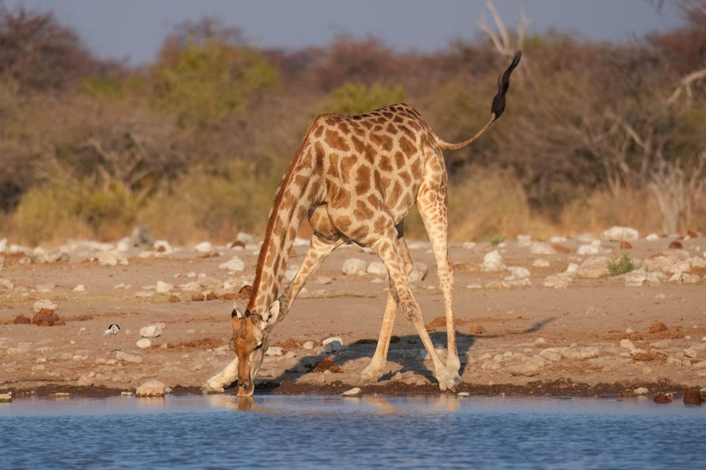
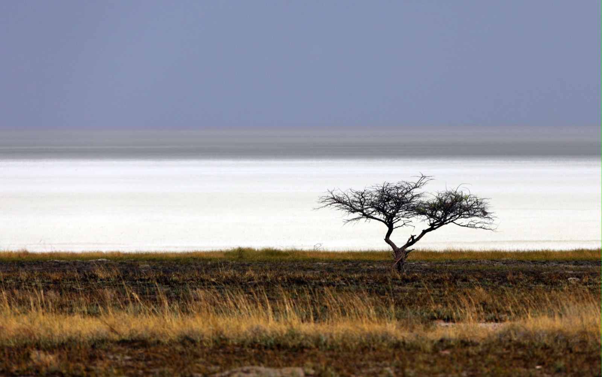
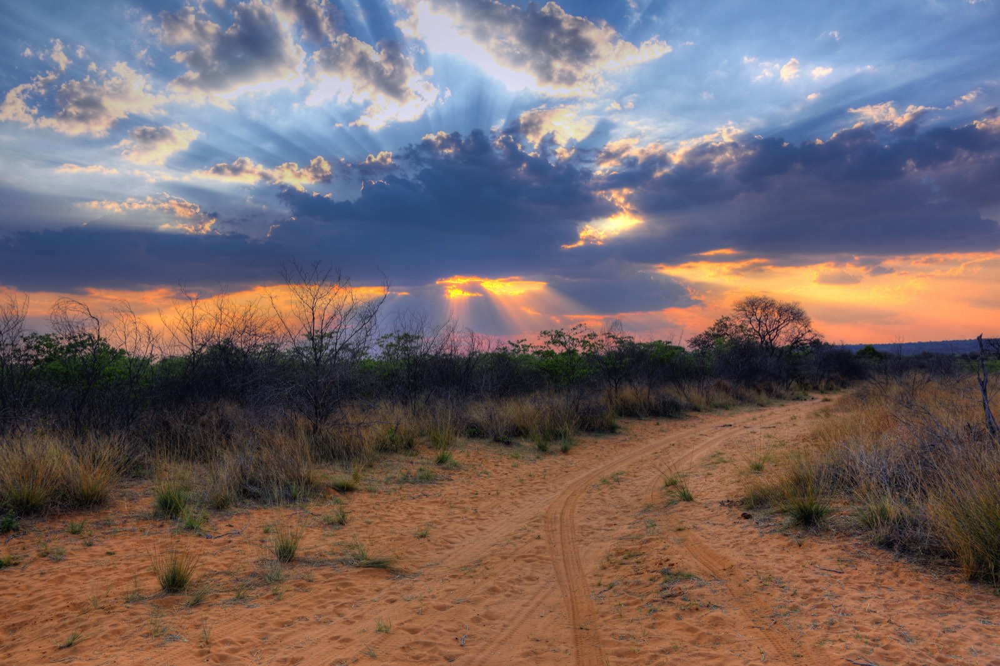

Parc national d'Etosha
Le safari, version intime
On guette les troupeaux qui se pressent aux points d'eau, du lever du jour à la nuit étoilée. La grande faune namibienne, au plus près, sans la foule.
On guette les troupeaux qui se pressent aux points d'eau, du lever du jour à la nuit étoilée. La grande faune namibienne, au plus près, sans la foule.
À Etosha, on ne court pas après les animaux : on les attend, ensemble. Posté à un point d'eau, on regarde l'Afrique défiler — éléphants, girafes, rhinocéros, springboks — dans une lumière qui change d'heure en heure.
Autour de son immense pan de sel blanc, Etosha concentre une faune spectaculaire que l'on observe au plus près des points d'eau. Le secret, c'est le tempo : être là aux bonnes heures, dans les bons secteurs, parfois même la nuit quand les rhinos viennent boire. Un safari pensé pour la qualité des rencontres — et toujours en sécurité, depuis le véhicule ou la terrasse du lodge.
Une journée type de safari — rythmée par la lumière et le comportement des animaux, avec de vraies pauses pour souffler.
On se réveille avec le parc. Eau fraîche embarquée, appareil prêt — on part à l'heure où la savane s'éveille.
Les fauves bougent encore, la lumière est douce. On roule lentement, à l'affût de la moindre silhouette.
La chaleur monte, les animaux se reposent — nous aussi. Pause, piscine, ou simplement l'ombre et le calme.
On repart quand la lumière redevient dorée. Les points d'eau s'animent, les troupeaux descendent boire.
Le grand lac de sel vire au rose. On s'arrête, on regarde le jour s'éteindre sur l'immensité.
Depuis la terrasse éclairée du lodge, un verre à la main, on observe rhinos et éléphants venir boire. En toute sécurité, et totalement magique.
On observe toujours depuis le véhicule ou la terrasse du lodge, à bonne distance. Les rencontres sont intenses mais parfaitement sécurisées — on profite du spectacle, l'esprit tranquille.
On coupe le moteur. Et l'un après l'autre, ils arrivent : d'abord les girafes, écartelées pour boire, puis les éléphants en file. Le cœur s'emballe à chaque silhouette.


Au crépuscule, le pan vire au rose et la faune s'anime. Certains lodges bordent un point d'eau éclairé : on y observe la nuit, depuis la terrasse, en silence.
Chaque lieu a sa propre page — suivez le fil, laissez-vous guider d'un point à l'autre.

Une mer blanche à perte de vue, vestige d'un lac disparu — le cœur minéral d'Etosha.
Découvrir ce lieu
Aux portes d'Etosha, un safari plus intime dans une réserve privée, points d'eau et silence.
Découvrir ce lieu
Une table de grès rouge surgissant de la savane, oasis de verdure et sanctuaire animalier.
Découvrir ce lieu"Les éléphants au point d'eau à la tombée de la nuit… le moment inoubliable du voyage. On n'avait qu'à profiter, tout était pensé."
"Les enfants n'oublieront jamais les girafes à dix mètres. L'itinéraire évitait les heures creuses, on a vu énormément d'animaux."
"Notre lodge donnait sur un point d'eau éclairé. Observer un rhino boire depuis la terrasse, le soir… magique. Merci pour ce choix."
Il s'intègre dans un itinéraire 100% sur mesure, pensé autour de vos envies. Parlons-en lors d'un appel découverte — offert et sans engagement.